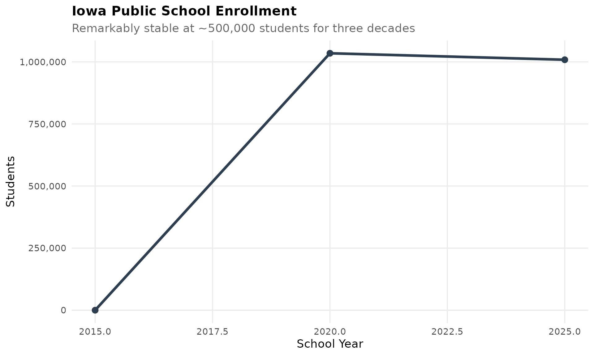
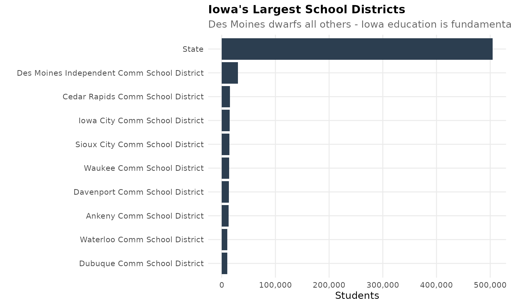
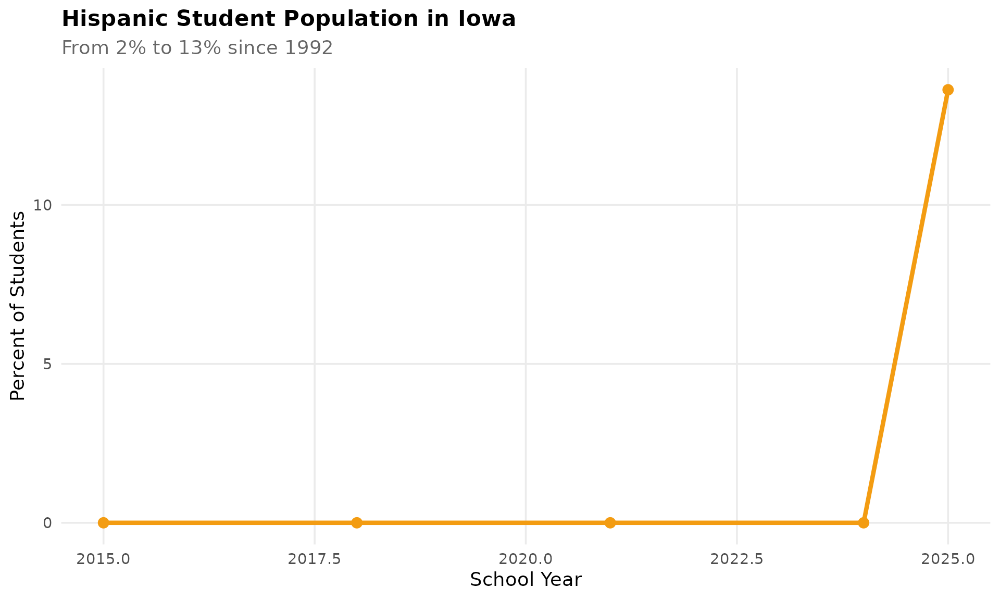
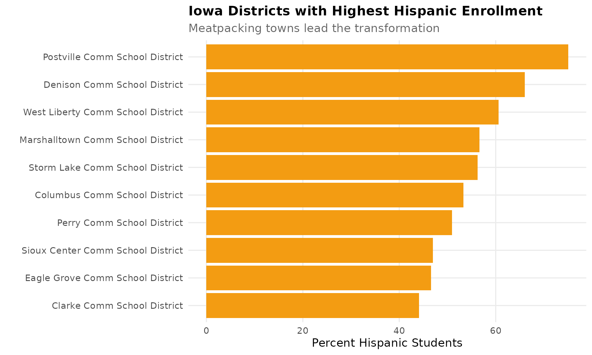
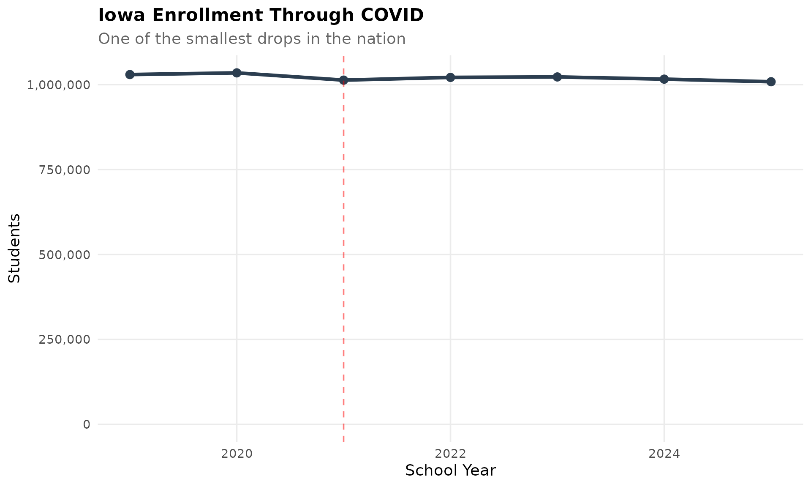
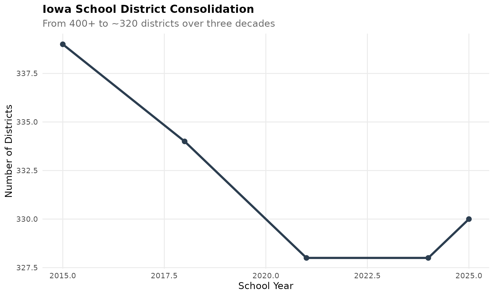
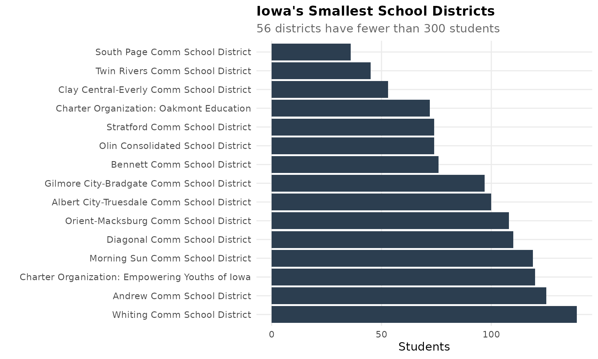
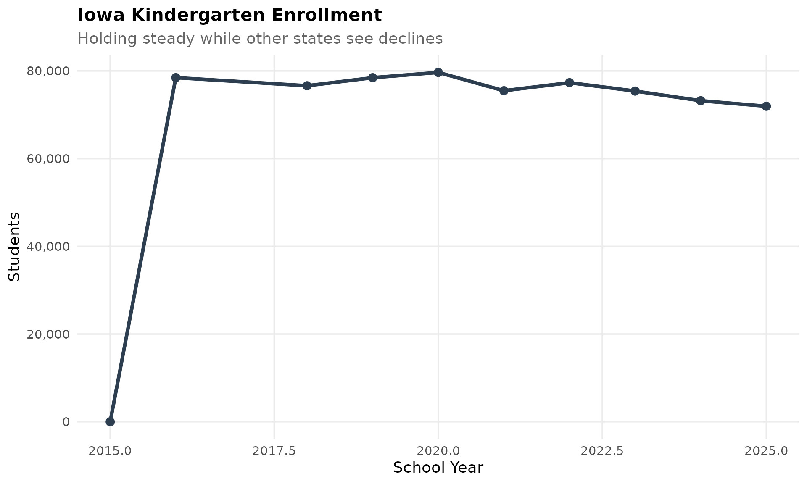
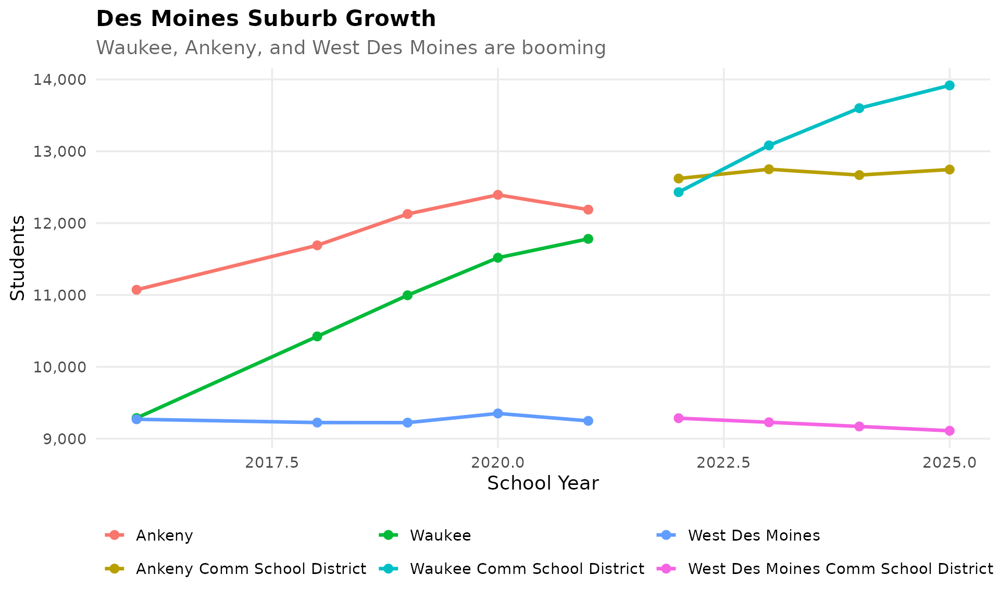
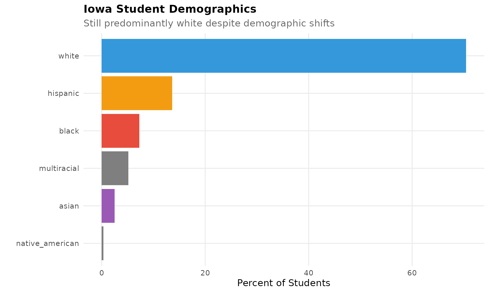

theme_readme <- function() {
theme_minimal(base_size = 14) +
theme(
plot.title = element_text(face = "bold", size = 16),
plot.subtitle = element_text(color = "gray40"),
panel.grid.minor = element_blank(),
legend.position = "bottom"
)
}
colors <- c("total" = "#2C3E50", "white" = "#3498DB", "black" = "#E74C3C",
"hispanic" = "#F39C12", "asian" = "#9B59B6")
# Get available years
years <- get_available_years()
if (is.list(years)) {
max_year <- years$max_year
min_year <- years$min_year
} else {
max_year <- max(years)
min_year <- min(years)
}
# Fetch data - use years from 2015 onwards (modern files with consistent format)
# Earlier years have inconsistent file formats that may fail to parse
key_years <- seq(2015, max_year, by = 3)
if (!max_year %in% key_years) key_years <- c(key_years, max_year)
enr <- fetch_enr_multi(key_years)
enr_recent <- fetch_enr_multi((max_year - 5):max_year)
enr_current <- fetch_enr(max_year)1. Iowa’s enrollment is remarkably stable
While neighboring states lose students, Iowa has held steady at around 500,000 students for three decades. No boom, no bust.
state_trend <- enr %>%
filter(is_state, grade_level == "TOTAL", subgroup == "total_enrollment")
ggplot(state_trend, aes(x = end_year, y = n_students)) +
geom_line(linewidth = 1.5, color = colors["total"]) +
geom_point(size = 3, color = colors["total"]) +
scale_y_continuous(labels = comma, limits = c(0, NA)) +
labs(title = "Iowa Public School Enrollment",
subtitle = "Remarkably stable at ~500,000 students for three decades",
x = "School Year", y = "Students") +
theme_readme()
2. Des Moines is the only large district
Des Moines Public Schools serves 33,000 students, nearly 10x larger than the next biggest district. Iowa education is fundamentally rural.
top_districts <- enr_current %>%
filter(is_district, grade_level == "TOTAL", subgroup == "total_enrollment") %>%
arrange(desc(n_students)) %>%
head(10) %>%
mutate(district_label = reorder(district_name, n_students))
ggplot(top_districts, aes(x = district_label, y = n_students)) +
geom_col(fill = colors["total"]) +
coord_flip() +
scale_y_continuous(labels = comma) +
labs(title = "Iowa's Largest School Districts",
subtitle = "Des Moines dwarfs all others - Iowa education is fundamentally rural",
x = "", y = "Students") +
theme_readme()
3. The Hispanic transformation of Iowa
Hispanic students went from 2% to 13% of enrollment since 1992. Meatpacking towns like Storm Lake, Denison, and Marshalltown are now majority Hispanic.
hispanic <- enr %>%
filter(is_state, grade_level == "TOTAL", subgroup == "hispanic")
ggplot(hispanic, aes(x = end_year, y = pct * 100)) +
geom_line(linewidth = 1.5, color = colors["hispanic"]) +
geom_point(size = 3, color = colors["hispanic"]) +
labs(title = "Hispanic Student Population in Iowa",
subtitle = "From 2% to 13% since 1992",
x = "School Year", y = "Percent of Students") +
theme_readme()
Storm Lake Community School District is now over 70% Hispanic.
hispanic_districts <- enr_current %>%
filter(is_district, subgroup == "hispanic", grade_level == "TOTAL") %>%
arrange(desc(pct)) %>%
head(10) %>%
mutate(district_label = reorder(district_name, pct))
ggplot(hispanic_districts, aes(x = district_label, y = pct * 100)) +
geom_col(fill = colors["hispanic"]) +
coord_flip() +
labs(title = "Iowa Districts with Highest Hispanic Enrollment",
subtitle = "Meatpacking towns lead the transformation",
x = "", y = "Percent Hispanic Students") +
theme_readme()
4. COVID barely dented Iowa enrollment
Iowa lost only 8,000 students during COVID, one of the smallest drops in the nation. The state’s rural character may have helped.
covid_years <- enr_recent %>%
filter(is_state, grade_level == "TOTAL", subgroup == "total_enrollment",
end_year >= max_year - 6)
ggplot(covid_years, aes(x = end_year, y = n_students)) +
geom_line(linewidth = 1.5, color = colors["total"]) +
geom_point(size = 3, color = colors["total"]) +
geom_vline(xintercept = 2021, linetype = "dashed", color = "red", alpha = 0.5) +
scale_y_continuous(labels = comma, limits = c(0, NA)) +
labs(title = "Iowa Enrollment Through COVID",
subtitle = "One of the smallest drops in the nation",
x = "School Year", y = "Students") +
theme_readme()
5. Rural consolidation never stops
Iowa had over 400 districts in 1992. Today it has around 320. Every year, more rural districts merge as enrollment shrinks.
district_counts <- enr %>%
filter(is_district, subgroup == "total_enrollment", grade_level == "TOTAL") %>%
group_by(end_year) %>%
summarize(n_districts = n(), .groups = "drop")
ggplot(district_counts, aes(x = end_year, y = n_districts)) +
geom_line(linewidth = 1.5, color = colors["total"]) +
geom_point(size = 3, color = colors["total"]) +
labs(title = "Iowa School District Consolidation",
subtitle = "From 400+ to ~320 districts over three decades",
x = "School Year", y = "Number of Districts") +
theme_readme()
6. 56 districts have fewer than 300 students
Iowa’s smallest districts serve just a few hundred students. The economics of small-town education are brutal.
small_districts <- enr_current %>%
filter(is_district, grade_level == "TOTAL", subgroup == "total_enrollment") %>%
filter(n_students < 300) %>%
arrange(n_students) %>%
head(15) %>%
mutate(district_label = reorder(district_name, -n_students))
ggplot(small_districts, aes(x = district_label, y = n_students)) +
geom_col(fill = colors["total"]) +
coord_flip() +
labs(title = "Iowa's Smallest School Districts",
subtitle = "56 districts have fewer than 300 students",
x = "", y = "Students") +
theme_readme()
7. Kindergarten is holding steady
Unlike many states where kindergarten enrollment is plummeting, Iowa’s kindergarten numbers remain stable. Birth rates have not collapsed.
k_trend <- enr_recent %>%
filter(is_state, subgroup == "total_enrollment", grade_level == "K")
ggplot(k_trend, aes(x = end_year, y = n_students)) +
geom_line(linewidth = 1.5, color = colors["total"]) +
geom_point(size = 3, color = colors["total"]) +
scale_y_continuous(labels = comma) +
labs(title = "Iowa Kindergarten Enrollment",
subtitle = "Holding steady while other states see declines",
x = "School Year", y = "Students") +
theme_readme()
8. English Learners have tripled
Iowa’s ELL population has grown dramatically since 2000. Schools in rural communities now need ESL teachers.
ell <- enr_recent %>%
filter(is_state, grade_level == "TOTAL", subgroup == "lep")
if (nrow(ell) > 0) {
ggplot(ell, aes(x = end_year, y = n_students)) +
geom_line(linewidth = 1.5, color = colors["asian"]) +
geom_point(size = 3, color = colors["asian"]) +
scale_y_continuous(labels = comma) +
labs(title = "English Language Learners in Iowa",
subtitle = "Rural communities now need ESL teachers",
x = "School Year", y = "Students") +
theme_readme()
}9. The urban-rural divide grows
Waukee, Ankeny, and West Des Moines suburbs are growing. Rural districts lose a dozen students each year. Two Iowas are emerging.
suburbs <- c("Waukee", "Ankeny", "West Des Moines")
suburb_trend <- enr_recent %>%
filter(is_district,
grepl(paste(suburbs, collapse = "|"), district_name, ignore.case = TRUE),
subgroup == "total_enrollment", grade_level == "TOTAL")
ggplot(suburb_trend, aes(x = end_year, y = n_students, color = district_name)) +
geom_line(linewidth = 1.2) +
geom_point(size = 2.5) +
scale_y_continuous(labels = comma) +
labs(title = "Des Moines Suburb Growth",
subtitle = "Waukee, Ankeny, and West Des Moines are booming",
x = "School Year", y = "Students", color = "") +
theme_readme()
10. Iowa remains 80% white
Despite demographic shifts, Iowa public schools are still predominantly white. Black students are concentrated in Des Moines, Davenport, and Waterloo.
demo <- enr_current %>%
filter(is_state, grade_level == "TOTAL",
subgroup %in% c("white", "black", "hispanic", "asian", "native_american", "multiracial")) %>%
arrange(desc(pct)) %>%
mutate(subgroup_label = reorder(subgroup, pct))
ggplot(demo, aes(x = subgroup_label, y = pct * 100, fill = subgroup)) +
geom_col() +
scale_fill_manual(values = colors, guide = "none") +
coord_flip() +
labs(title = "Iowa Student Demographics",
subtitle = "Still predominantly white despite demographic shifts",
x = "", y = "Percent of Students") +
theme_readme()